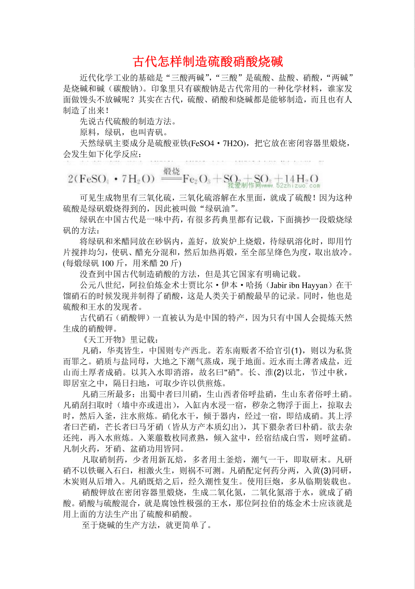
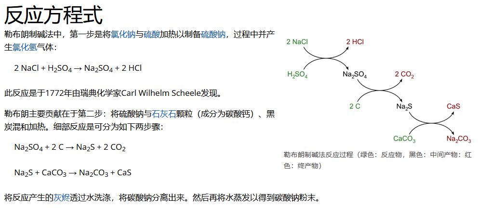
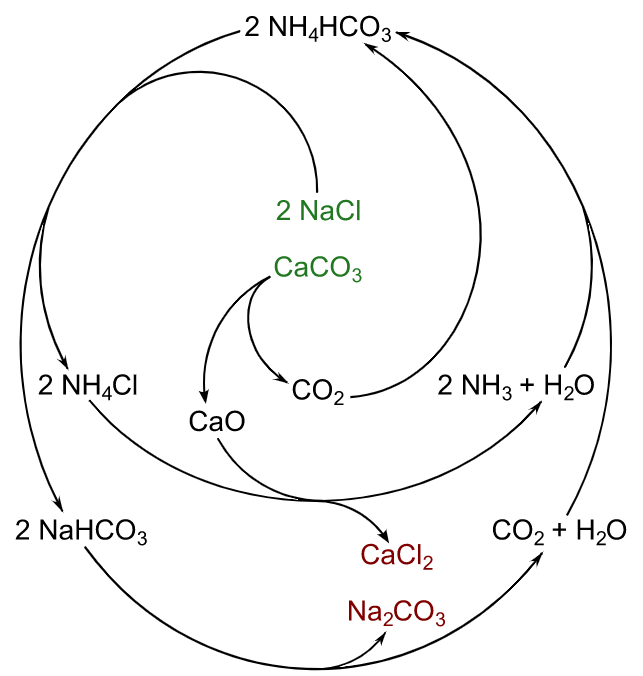

三酸两碱，即硝酸（HNO₃）、硫酸（H₂SO₄）、盐酸（HCl）和氢氧化钠（NaOH）、碳酸钠（Na2CO3）。
无机含氮化合物。
见《元素化学》
含能材料。
含能材料是在一定条件下，自身能够发生氧化还原反应，并释放出大量能量的一类化合物或混合物。
化工有机产品
三酸两碱，即硝酸（HNO₃）、硫酸（H₂SO₄）、盐酸（HCl）和氢氧化钠（NaOH）、碳酸钠（Na2CO3）。
无机含氮化合物。
见《元素化学》
含能材料。
含能材料是在一定条件下，自身能够发生氧化还原反应，并释放出大量能量的一类化合物或混合物。
化工有机产品
公元八世纪，阿拉伯炼金术士贾比尔·伊本·哈扬（Jabir ibn Hayyan）在干馏硝石的时候发现并制得了硝酸，这是人类关于硝酸最早的记录。
1905年，挪威出现了电弧法生产硝酸的工厂，这是历史上最早的硝酸工业化尝试。
1908年，德国建成了以铂网为催化剂的日产能力3吨的硝酸厂。
1913年，合成氨问世，氨氧化法生产硝酸开始进入工业化阶段，至今依然是世界上生产硝酸的主要方法。
硝酸与水在约68％（重量百分比）的硝酸时形成共沸混合物，在大气压力下的沸点为122℃。
凡硝，华夷皆生，中国则专产西北。若东南贩者不给官引，则以为私货而罪之。硝质与盐同母，大地之下潮气蒸成，现于地面。近水而土薄者成盐，近山而土厚者成硝。以其入水即消溶，故名曰“硝”。长、淮以北，节过中秋，即居室之中，隔日扫地，可取少许以供煎炼。
硝酸盐可以从厕所中取得。

How to Make Potassium Nitrate from Scratch: Part One (Making Nitrified Earth)
https://www.youtube.com/watch?v=6w2cwJmVNbU
Extraction of Nitrates from Soil (The Old Way of Producing Saltpeter)
https://www.youtube.com/watch?v=tRfc78n9mg8
硝土一般存在于厕所、猪、牛栏屋，庭院的老墙脚，崖边，岩洞以及不易被雨水冲洗的地面。硝土潮湿，不易晒干，经太阳曝晒后略变紫红色。好的硝土放在灼红的木炭上会爆出火花。
从硝土中提取硝酸钾，主要原理是利用草木灰中的钾离子取代硝土中的钠离子，从而生成硝酸钾。另外，草木灰里的碳酸根离子和硫酸根离子跟硝土里的钙、镁离子结合，生成难溶性的盐而沉淀，从而去掉钙、镁等杂质。
为了保证火药供应，堂堂英国国王竟然下令全国厕所归国所有！
https://zhuanlan.zhihu.com/p/69243960
厕所为什么出硝石 - 行者的回答 - 知乎
https://www.zhihu.com/question/52594499/answer/1842038341
稀硫酸的制作方法：
1.硫酸铜和草酸反应
2.电解硫酸铜
3.过一硫酸钾分解得到三氧化硫
4.硫代硫酸钠与酸反应得到硫或者亚硫酸钠与硫化钠在酸性条件下得到硫，硫燃烧生成二氧化硫，用铅室法或者接触法制得硫酸。
5.硫化亚铁热分解（古代制作硫酸的方法）
6.用氯化铜与氯化亚铜的催化循环氧化亚硫酸钠制作硫酸。
7.通过电解硫粉与溴化钠的溶液制得硫酸
8.氯气与二氧化硫在活性炭催化下得到SO2Cl2水解后得到硫酸。
9.铅酸蓄电池的电池原液就是稀硫酸
勒布朗制碱法（英语：Leblanc Process）是由法国化学家尼古拉斯·勒布朗在1791年所发明的工业合成碳酸钠（苏打、纯碱、洗涤碱）的方法。该方法随着氨碱法的出现和发展而逐渐过时被淘汰。

1861年，比利时人索尔维（Ernest Solvay,1832-1922）以食盐、石灰石和氨为原料，制得了碳酸钠和氯化钙，是为氨碱法（ammonia soda process）。

索尔维制碱法作为在化学工业一个循环过程的一个例子（绿色=反应物，黑色=中间体，红色=产品）
氮元素及化合物.pdf (1.9 MB)
碳氮化合物.pdf (210.6 KB)
建议使用催化氧化的方法制备硝酸，即使在实验室里也可以用铂催化剂完成催化氧化，然而铂十分昂贵200RMB/g，其它催化剂也能做到，比如Cr2O3，用氧化铝负载的碳酸钴等。
关于反应器：
微型、小型化工反应器：
（待补充）
关于工业高温炉窑：
关于耐火材料：
有了三氧化硫之后可以在甲苯上引入第三个硝基。
乙酸酐也可以由此制得。
Sulfur trioxide from sodium hydrogen sulfate
With this preparation I think I have found the easiest, cheapest and highest-yielding method of sulfur trioxide production for the amateur chemist.
The idea of making sulfur trioxide by heating sodium hydrogen sulfate has been brought up since the beginning of discussion on oleum production on this board, more specifically here:
The old Oleum & SO3 thread
But as far as I know, I am the first one to have success with it.
For more information about other methods, look at the ferric sulfate method, the persulfate method and the vanadium(V)oxide catalysed method.
Theory
Sodium hydrogen sulfate gives off water when heated at 300- 500°C and turns into sodium pyrosulfate:
2 NaHSO4 -----> Na2S2O7 + H2O
This in turn gives off SO3 at 680- 880°C:
Na2S2O7 -----> Na2SO4 + SO3.
The temperatures stated are the ones I observed, they were measured at the outside of the test tube.
In literature you will find very much lower temperatures- I assume those are the temperatures at which the corresponding decomposition just starts, not the ones at which the decomposition goes at a useful rate.
The two reactions are not cleanly separated. Even when one heats at 480°C until absolutely no more water vapor is being produced, as I have done, some concentrated H2SO4 will come over from 500- 670°C, no matter how slowly the heating is carried out.
The yield of SO3 coming over at 680- 880°C is still extremely good, though.
But what makes the NaHSO4 method so much better than the ferric sulfate method, which operates at a similar temperature, is the fact that the SO3 does not decompose to SO2 and O2 at all.
The equilibrium for the thermal decomposition and formation of SO3 indicates that ca. 70% of the SO3 should be decomposed at 800°C- see the diagram that I posted in the ferric sulfate method.
I cite Ullmann’s Encyclopedia:
Quote:
Pure sulfur trioxide is in fact extremely resistant to thermal decomposition because of kinetic inhibition, even at elevated temperatures where thermodynamic equilibrium is shifted heavily toward SO2 + O2. However, certain catalytically active substances are able to increase the rate of equilibration substantially. In the presence of metals such as platinum or of metal oxides and sulfates (e.g., of iron, copper, and, of course, vanadium) the decomposition approaches equilibrium at temperatures above ca. 700 °C.
The ferric sulfate/oxide in my ferric sulfate method catalyzed the dissociation of SO3.
No iron or other heavy metal compounds are present in the NaHSO4 method, hence no dissociation of SO3 here.
This explains the unusually high yield of SO3 obtained from NaHSO4 and the complete absence of any SO2 smell.
Precursor
The precursor is technical grade sodium hydrogen sulfate, purchased from the pool section of the home store.
It is used for lowering the pH of swimming pools, and comes in buckets of 1,5kg.
Apparatus and Procedure
100g NaHSO4 were filled into a quartz glass test tube with joint, the same one I had used for the ferric sulfate pyrolysis.

After melting, the melt filled only half of the test tube.
This was then slowly heated in the tube furnace. At 300-450°C there was a strong evolution of water vapor after melting.

It was held at 480°C for 45min, after which the steam evolution had ceased entirely.
Upon further heating from 500- 670°C, small amounts of concentrated H2SO4 slowly distill off. To capture and condense the vapors, I placed a round-bottom flask in front of the test tube:

A quartz joint with a bent tube would have been much better to use, but I didn’t have such a thing.
At 680°C, SO3 evolution started. A quartz glass extension was put on the test tube, and a glass joint adapter carrying a bent glass tube was put on the extension. The glass tube led into a cylindrical receptacle cooled with water from the outside, so this was essentially the same apparatus I used for the ferric sulfate pyrolysis.
Since the SO3 is pure and not diluted with SO2, no ice is necessary for cooling.
The SO3 had a tendency to crystallize inside the glass tube, potentially leading to plugging. To remedy this, I increased the heating power on the tube furnace so that the SO3 came over faster and at a temperature above the melting point of solid SO3. Here is a picture of the SO3 in the tube melting:
Some crystals of solid SO3 deposited on the walls of the receptacle, while the bulk of the product collects below the cooling water surface:
The evolution of SO3 was complete at 880°C. I briefly heated to 930°C to melt the sodium sulfate into a single chunk:

And this is the product after solidification- an astounding 23,8g of SO3, from 100g NaHSO4, a 71% yield!

Conclusion
I think the yield of the NaHSO4 method speaks for itself. This is a much better method than the ferric sulfate pyrolysis.
Adding to that, the precursor can simply be bought OTC instead of having to prepare the ferric sulfate precursor beforehand.
Now we have a high-yielding and cheap method of SO3 production.
This should open up lots of possibilities- the synthesis of TNT, which requires oleum in the last step, springs to mind.
I have already explained in the other thread how useful SO3 and oleum are for the synthetic chemist. Thionyl chloride, dimethyl sulfate, chlorosulfonic acid, Oleum as dehydrating agent etc… are just a few applications of SO3.
If you choose to make SO3, please make yourself aware of the dangers of this substance first.
The warning “Extremely corrosive” does not really express the dangers appropriately. Oleum destroys many plastics, like PE and PP, that are completely resistant to 98% H2SO4- only glass and fluoropolymers like PTFE are really safe.
The reaction of SO3 with water is explosively violent. SO3 must only be diluted with concentrated H2SO4!
SO3 and Oleum also create an extremely dense fog when handled in open air, due to reaction of gaseous SO3 with aerial moisture forming droplets of H2SO4. If using a fume hood, be aware that all this thick fog will come out the exhaust! Most filters are incapable of precipitating H2SO4 fogs!
[Edited on 24-3-2008 by garage chemist]